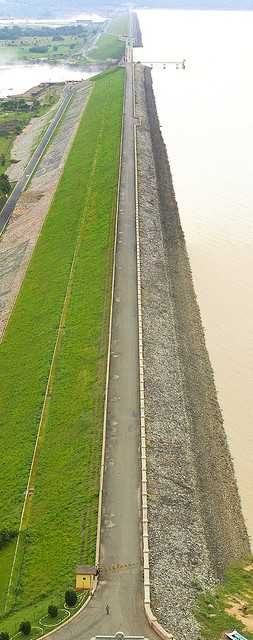
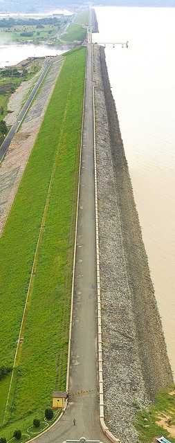

ODISHA
India's Best Kept Secret
"The Soul of Incredible India"
Odisha- the land of paddy fields and palm-fringed silver beaches, temples, rivers, waterfalls and tribal
people, is filled with major attractions such as the temples of Bhubaneshwar and Puri, miles of clean
beaches and the magnificent Sun Temple of Konark.
Odisha, the state with a glorious history, is filled with nature and adventure. Inhabited by tribal
people, the not-so-developed state of Odisha must be visited to have the experience of the myriad
wonders it has in store for everybody. Also known as the soul of India, Odisha is a place where you can
relax on the beaches, visit the famous temples and explore the beauty and bounty of nature and wildlife.
You can also find various monuments which gloriously stand to remind you of the history of the land.
Odisha's art and culture, fairs and festivals, dances and music are a treat for the tourists who love to
see colours and wish to enjoy life to the fullest. Visit the soul state of India and come back with a
bag full of memories that will remain etched in your mind for a long time.


 
